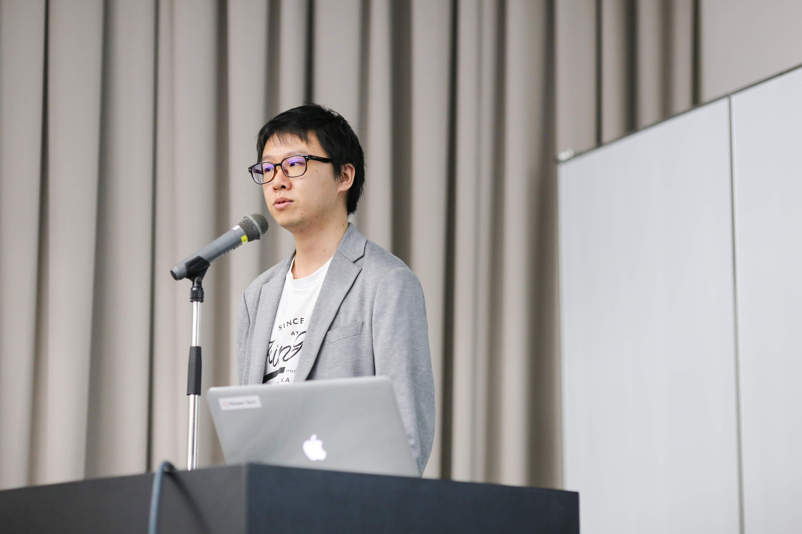
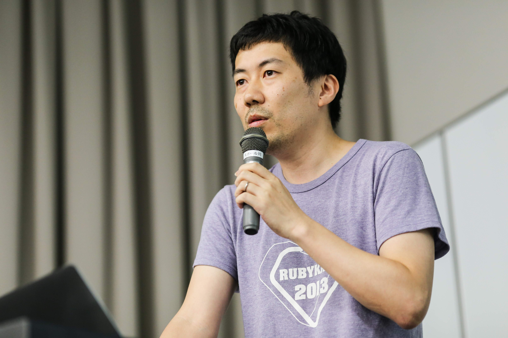
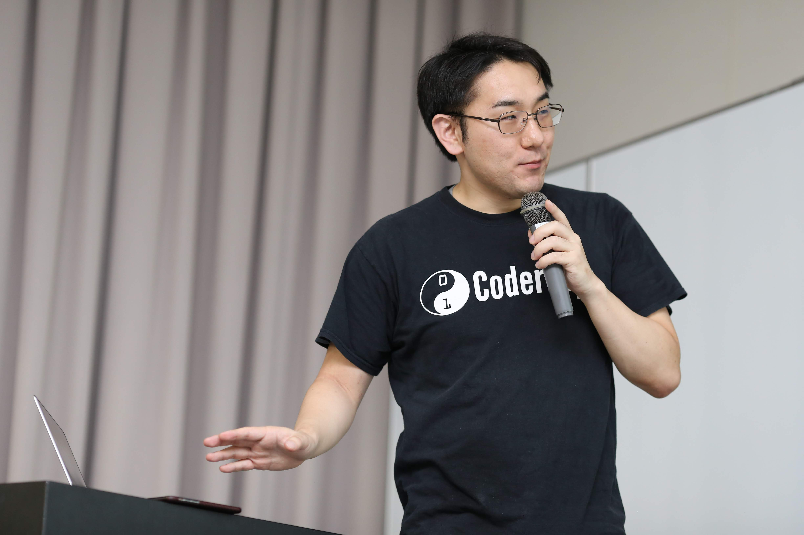
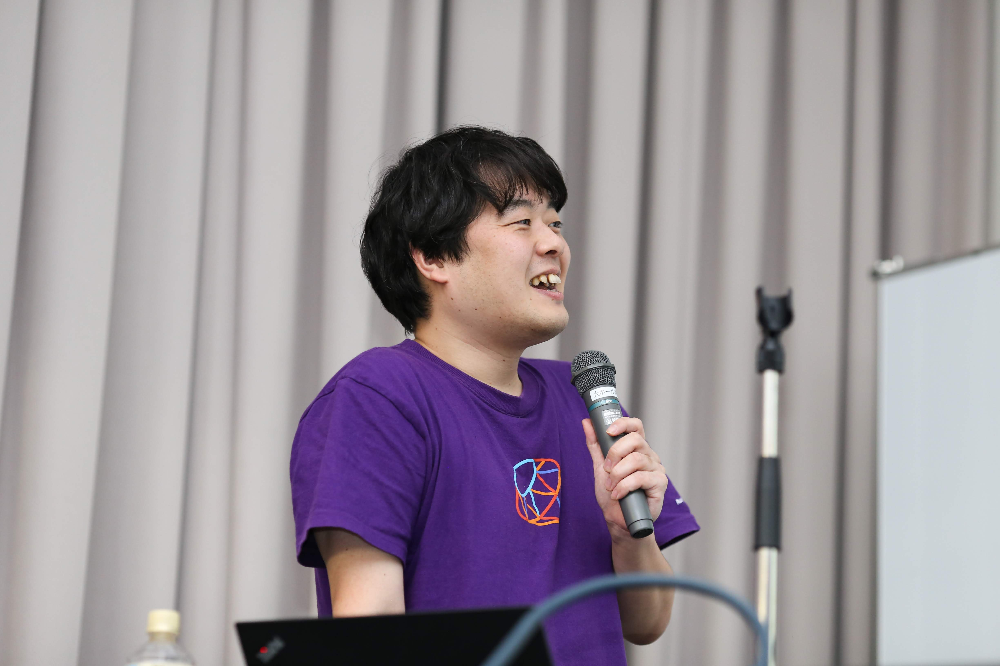

RegionalRubyKaigi レポート (77) 大阪Ruby会議02
初稿：2020-02-02
RegionalRubyKaigi レポート (77) 大阪 Ruby 会議 02
はじめに
- 日時：2019年9月15日（日）10:00〜17:00（懇親会: 18:00〜）
- 場所：大阪科学技術センター(8階大ホール)
- 主催：naniwa.rb(ナニワアールビー)
- 後援：Ruby関西(ルビーカンサイ)
- 写真：大阪Ruby会議02写真一覧
- Togetter： https://togetter.com/li/1405373
- 公式タグ・Twitter：#osrk02

大阪Ruby会議とは
2018年7月21日（土）に大阪Ruby会議01が初めて開催されました。
以前までは関西Ruby会議という規模で開催していましたが、より地域に密接したRuby会議にしようというということになり、ローカルな大阪Ruby会議として開催されました。
第2回となる今回も大阪市にある科学技術センターで開催しました。
総勢153名(運営スタッフ含む)の方にご参加いただきました。
TechTalks(午前の部)
オープニング

- 発表者
- 尾籠さん(@ogomr)
今回のRuby会議のテーマとロゴについて発表してくださいました。
->スライド
[スポンサートーク]開発メンバーの課題の探し方: 株式会社エイチーム

- 発表者
- Yamaguchi Kentaさん(@kytiken)
大規模なPHP=>Rails移管プロジェクトに対して、MBTI(Myers-Briggs Type Indicator)という心理学的分類を活用し、メンバー間のクセや気をつけるポイントを意識。
チーム内でフォローできる箇所を探せるようにした知見を共有していただきました。
それぞれの連携や役割分担が難しいチーム開発だからこそ、個人の特性や心理的なタイプなどを予め知っておくことは大切かもしれません。
[テックトーク]Ruby Security The hard way

- 発表者
- 柴田 博志さん(@hsbt)
Rubyに脆弱性が見つかった時の対処方法について
報告/発見した脆弱性をトリアージするフローや実際に報告された事例をもとに対応した例を共有していただきました
検証にかかるコストと報告にかかるコストの非対称性、報告する側も意識しながらレポートを書かないといけないなとしみじみ思いました
[テックトーク]チャットボットのすすめ: 株式会社Ruby開発

- 発表者
- 西山 和広さん(@znz)
チャットボットは勉強にもなるし活用次第ではとても面白いものが作れる。
実際に作成したボットやボットの種類を例にして知見を共有していただきました。
セキュリティに関する話題にも言及していて、明日からでも使える知見
チャットというUIが非エンジニアにとっても扱いやすいことから、自分もよく使うので勉強になりました。
->スライド
[キーノート]プログラミングを一生の仕事にする〜顧問プログラマを8年続けてわかったこと〜
- 発表者
- 西見 公宏さん(@mah_lab)
ソフトウェア開発のカタチが変わりつつあるということがまとめられています。
ライブ設計力とそれを支える自己研鑽。
顧問プログラマがどんなお仕事か、どんな能力が必要とされるかを発表して頂きました。
要件をヒアリングしたり、質問したり、何を実装するのにどれくらいかかったかを意識、振り返り、日常で使っている武器を磨き続けることが大切なんだなとわかりました。
->スライド
ランチタイムLT

ランチタイムに飛び入りLTを行いました
本当に突然はじまったので、写真だけのご紹介!!
TechTalks(午後の部)
[スポンサートーク]アジャイルウェアとその現場について: 株式会社アジャイルウェア

- 発表者
- 川端 光義さん
- 福田 健人さん
会社の環境とこれから目指すところ、現状について発表して頂きました。
会社の設備も様々、抱える課題も様々で、本当に働くって面白いなと思いました。
[スポンサートーク]エンジニア転職のノウハウ: エネチェンジ株式会社

- 発表者
- 川西 智也さん(@cuzic)
転職を考えているエンジニアのレベル別に、やってみて欲しいことをまとめてくださっています。
また会社の選定についても発表していただきました。
転職を考えていなくても次のスキルアップに参考になる知識が盛りだくさんでした。
->スライド
[テックトーク]子どものためのプログラミング道場 『CoderDojo』を支えるRailsアプリケーシ ョンの設計と実装

- 発表者
- 安川 要平さん(@yasulab)
CoderDojoの活動に対して、スクレイピング、podcastなど、裏で支えるRuby/Railsの活用方法についてまとめて頂きました。
Rubyの裏方ぶりもすごいですが、CoderDojoの開催数の推移がすごい…
->スライド
[テックトーク]Ruby/Rails Benchmarking and Profiling with TDD

- 発表者
- Uemori Yasutomoさん(@wakaba260yen)
「推測するな、計測せよ」
パフォーマンス改善の際に、意識する格言です
Ruby/Railsアプリケーションのパフォーマンスに関するテストについて発表していただきました。
パフォーマンスチューニングの際に、何度も計測する機構を最初に準備することが改めて大切だと気づきました。
->スライド
[テックトーク]Suppress warnings

- 発表者
- Kuwabara Masatakaさん(@p_ck_)
Rubyが持つWarningの機構について解説
その閾値を変更することで、よきせぬバグを防げることとOSSにコントリビュートする機会が増えるという発表をしてくださりました。
warningはともすれば目を反らしがちですが、それに向き合うことで得られるリターンの大きさがわかる発表でした。
log-level上げてみよう!ってなります
->スライド
[スポンサートーク]Railsの起動速度を上げる裏方のgemについて: 株式会社インゲージ

- 発表者
- 石田 游さん(@ishiyu)
Railsの起動速度を上げる裏方gem、spring, bootsnapについて。
実際に速度改善がされているか、実測値の計測もされていて、どれくらい上記のgemが起動速度改善に影響しているか発表していただきました。
Rails触りはじめに初心者を泣かせるカワイイgemの話で、何度もハマったなとしみじみ
[テックトーク]Concerns about Concerns

- 発表者
- 前島 真一さん(@netwillnet)
Concernのおまじないについて解説、Concernを用いる時のアンチパターンについて発表してくださいました。
アンチパターンに引っかかることをしたことがあるような…現在もその負債を返しています。
増やさないためにチームで認識をすり合わせることも大切ですね。
->スライド
[テックトーク]Fat Modelに対処するための考え方と6つのリファクタリングパターン

- 発表者
- 保立 馨さん(@purunkaoru)
Fat Modelにしないために気をつけることと、チーム内での認識のすり合わせ、パターン化によるリファクタリングの実例について発表していただきました。
リファクタリングのお話v2です。
Concernの話で、「モデルにビジネスロジックを移す」からのキレイなパス回しになっています笑
こちらもチーム内での認識合わせと、役割を意識したコード分割が大切としみじみ感じさせられます
->スライド
[テックトーク]What a cool Ruby-2.7
- 発表者
- Hashidate Tomohiroさん(@joker1007)
Ruby2.7で追加された新しい機能を駆使し、新しいスタイルのコーディングについて発表して頂きました。
うー。や、やばい…
->スライド
[テックトーク]いつでもどこでもクールなRubyを書く方法

- 発表者
- Fukuda Kentoさん(@yebis0942)
Rubyが更新され便利な記法が登場しても、稼働するRubyのバージョンが合ってなければそれは使えません
そこで新しい記法を利用して、旧記法にトランスパイルする方法/その課題を発表してくださいました。
特別な事情で言語のバージョンを上げられないケースは少なからずありそうです…
そんな時にこのようなツールがあると感激!
baberuという命名も好きです
->リポジトリ
->スライド
[テックトーク]Ruby 3の型解析に向けた計画

- 発表者
- Endoh Yusukeさん(@mametter)
Ruby3系に向けて、型解析機能の構想と進捗、便利さ、つらみについて発表してくださいました。
特にコンテナ型。。。
つらみをすごく感じた発表でしたが笑、3系がとても楽しみになります!
ますますコミッターの方々に頭が上がらなくなりますm(_ _)m
ご協力頂いた企業様(五十音順)
株式会社アジャイルウェア 株式会社インゲージ 株式会社エイチーム エネチェンジ株式会社 株式会社Ruby開発
著者について
五島 僚太郎(@510_five)
有限会社SCC大阪で社内のICT化促進やシステム運用を担当、受託開発も行ってます。